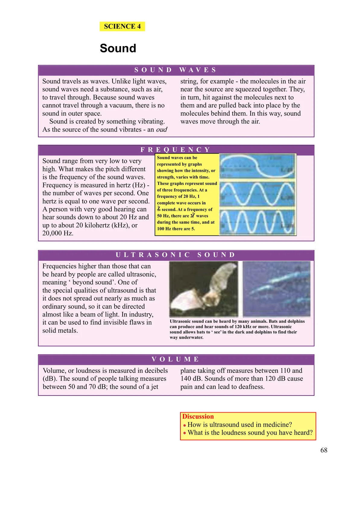

SCIENCE 4 Sound SOUND WAVES Sound travels as waves. Unlike light waves, sound waves need a substance, such as air, to travel through. Because sound waves cannot travel through a vacuum, there is no sound in outer space. Sound is created by something vibrating. As the source of the sound vibrates - an oud string, for example - the molecules in the air near the source are squeezed together. They, in turn, hit against the molecules next to them and are pulled back into place by the molecules behind them. In this way, sound waves move through the air. FREQUENCY Sound range from very low to very high. What makes the pitch different is the frequency of the sound waves. Frequency is measured in hertz (Hz) - the number of waves per second. One hertz is equal to one wave per second. A person with very good hearing can hear sounds down to about 20 Hz and up to about 20 kilohertz (kHz), or 20,000 Hz. Graph box: Sound waves can be represented by graphs showing how the intensity, or strength, varies with time. These graphs represent sound of three frequencies. At a frequency of 20 Hz, 1 complete wave occurs in 1/20 second. At a frequency of 50 Hz, there are 2 1/2 waves during the same time, and at 100 Hz there are 5.
ULTRASONIC SOUND Frequencies higher than those that can be heard by people are called ultrasonic, meaning ' beyond sound'. One of the special qualities of ultrasound is that it does not spread out nearly as much as ordinary sound, so it can be directed almost like a beam of light. In industry, it can be used to find invisible flaws in solid metals. Caption: Ultrasonic sound can be heard by many animals. Bats and dolphins can produce and hear sounds of 120 kHz or more. Ultrasonic sound allows bats to ' see' in the dark and dolphins to find their way underwater. VOLUME Volume, or loudness is measured in decibels (dB). The sound of people talking measures between 50 and 70 dB; the sound of a jet plane taking off measures between 110 and 140 dB. Sounds of more than 120 dB cause pain and can lead to deafness. Discussion: • How is ultrasound used in medicine? • What is the loudness sound you have heard?
1/20 second و2 1/2 waves (إذ يدمج مستخرج النص الآلي الأرقام فيصير 22 waves سهواً!).Sound range from (بلا -s المفرد)، ومسافات قبل ' beyond sound' و' see'، وصفة the loudness sound (بدل loudest) في سؤال المناقشة، وسقوط القوس المفتوح في قائمة المفردات hertz Hz) (WB ص 116).[
{
"num": 1,
"prompt": "frequency → unit of measurement: ______ (and kilohertz)",
"answers": [
"hertz",
"Hertz"
]
},
{
"num": 2,
"prompt": "frequency → abbreviation: ______ (and kHz)",
"answers": [
"Hz",
"Hz / kHz"
]
},
{
"num": 3,
"prompt": "frequency examples → human range: ______",
"answers": [
"20 Hz to 20 kHz",
"20 Hz - 20 kHz",
"20 Hz to 20,000 Hz"
]
},
{
"num": 4,
"prompt": "frequency examples → bat and dolphin range: ______",
"answers": [
"120 kHz or more"
]
},
{
"num": 5,
"prompt": "item (with unit 'decibels'): ______",
"answers": [
"volume",
"loudness",
"volume / loudness"
]
},
{
"num": 6,
"prompt": "decibels → abbreviation: ______",
"answers": [
"dB"
]
},
{
"num": 7,
"prompt": "decibels examples → talking: ______",
"answers": [
"50-70 dB",
"50 to 70 dB",
"between 50 and 70 dB"
]
},
{
"num": 8,
"prompt": "decibels examples → jet plane: ______",
"answers": [
"110-140 dB",
"110 to 140 dB",
"between 110 and 140 dB"
]
}
][
{
"num": 2,
"question": "2 vibration",
"model_answer": "Sound is created by something vibrating (e.g. an oud string).",
"explain_ar": "مصدر تولّد كل صوت."
},
{
"num": 3,
"question": "3 molecules",
"model_answer": "Molecules in the air near a vibrating source are squeezed together, hit neighbouring molecules, and carry sound waves through the air.",
"explain_ar": "تنتقل الموجة بتضاغط جزيئات الهواء وتصادمها."
},
{
"num": 4,
"question": "4 pitch",
"model_answer": "How low or high a sound is, which depends on the frequency of the sound waves.",
"explain_ar": "تتحدد درجة الحدة أو الغلظة بالتردد."
}
][
{
"num": 1,
"question": "1 How can sound be useful in factories?",
"model_answer": "Ultrasound does not spread out much and can be directed like a beam of light to detect invisible flaws inside solid metals.",
"explain_ar": "كشف الشقوق الخفية داخل المعادن الصلبة بالصناعة."
},
{
"num": 2,
"question": "2 How can headphones be dangerous?",
"model_answer": "If played at very loud volume (especially over 120 dB), sounds right against the ear cause pain and can lead to deafness.",
"explain_ar": "الضوضاء العالية فوق 120 ديسيبل تؤدي إلى الصمم."
},
{
"num": 3,
"question": "3 How do bats 'see'?",
"model_answer": "They produce and hear high-frequency ultrasonic sound waves (120 kHz or more) that bounce off objects in the dark, allowing them to navigate without light.",
"explain_ar": "استعمال صدى الموجات فوق الصوتية في الظلام."
}
]{
"pb_text_vs_image": "طُوبقت PB ص 68 مع pb-70.png: صُحّحت قراءة pdftotext الخاطئة '22 waves' إلى الكسر المطبوع فعلياً '2 1/2 waves'، وحُفظت صيغ 'Sound range from' و'the loudness sound'.",
"wb_ocr_vs_image": "طُوبقت WB ص 100 مع wb_tail-101.png وتم استكمال جدول القياس 4 C و4 D و4 E."
}